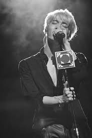

Kim Jonghyun
(SHINee)

Singer, Songrwriter (1990–2017)
Things About Kim Jonghyun:
- Kim Jonghyun was born in the jung district of Seoul on the 8th April 1990
- He has an older sister and a Dachshund called Roo
- He was a very lively pupil in school and played base guitar in his highschool band.
- At 15 Jonghyun was scouted for SM Entertainment in 2005 after playing with his band at a music festival.
- Jonghyun debuted as lead singer of the kpop group SHINee on 25th May 2008.
- Shinee would go on to have one of the most successful debutes in kpop history.
- He was one of the first artists in Kpop to have full creative freedom when it came to music.
- He has released many top selling albums including, Base, Story Op 1 & 2, She Is and Poet|Artist.
- Jonghyun has also written song for artists outside of SM including IU and Lee Hi.
- Jonghyun has written a book titled Skeleton Flower: Things That Have Been Released and Set Free.
- Jonghyun passed away on the 18th December 2017
Trying your best is important. I think it's a responsibility that comes along no matter what your age is.
- Kim Jonghyun
If you have time, you should read more about this incredible human being on his Wikipedia.